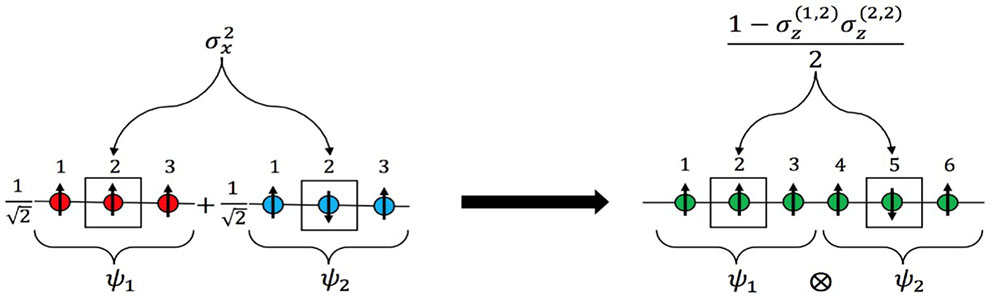
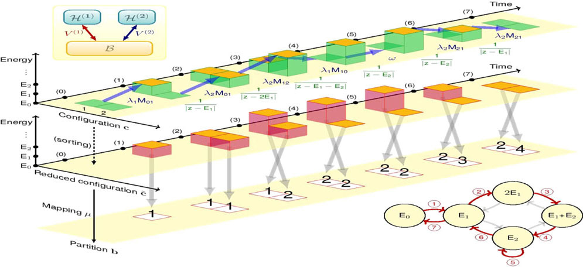
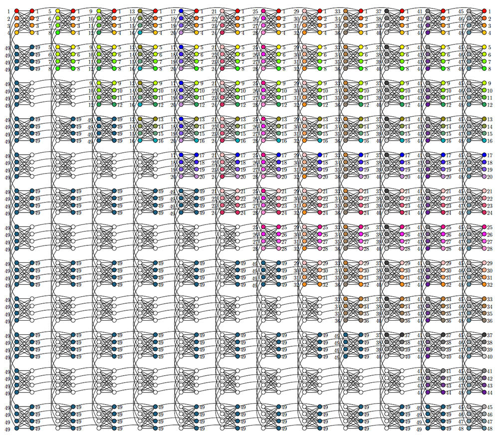

Sabre Kais Group
Quantum Information and Quantum Computation
Adiabatic Quantum Computing
The exact solution of Schrodinger equation for atoms, molecules and extended systems continues to be a "Holy Grail" problem that the entire field has been striving to solve since its inception. Recently, breakthroughs have been made in the development of hardware-efficient quantum optimizers and coherent Ising machines capable of simulating hundreds of interacting spins with an Ising type Hamiltonian. One of the most vital questions pertaining to these new devices is:
"Can these machines be used to perform electronic structure calculations?" We are developing a general procedure to be used by these devices for the possibility of performing electronic structure calculations.

Electronic Structure Calculations and the Ising Hamiltonian
R. Xia, T. Bian and S. Kais, arXiv:1706.00271 (PDF)

Quantum Combinatorial Algorithm for Perturbation Theory
Y. Cao and S. Kais, QUANTUM INFORMATION & COMPUTATION, 17, 779-809 (2017)
Factoring Large Numbers
Embed to D-wave Chimera graph for factoring 127759=251×509
